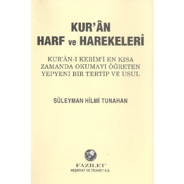
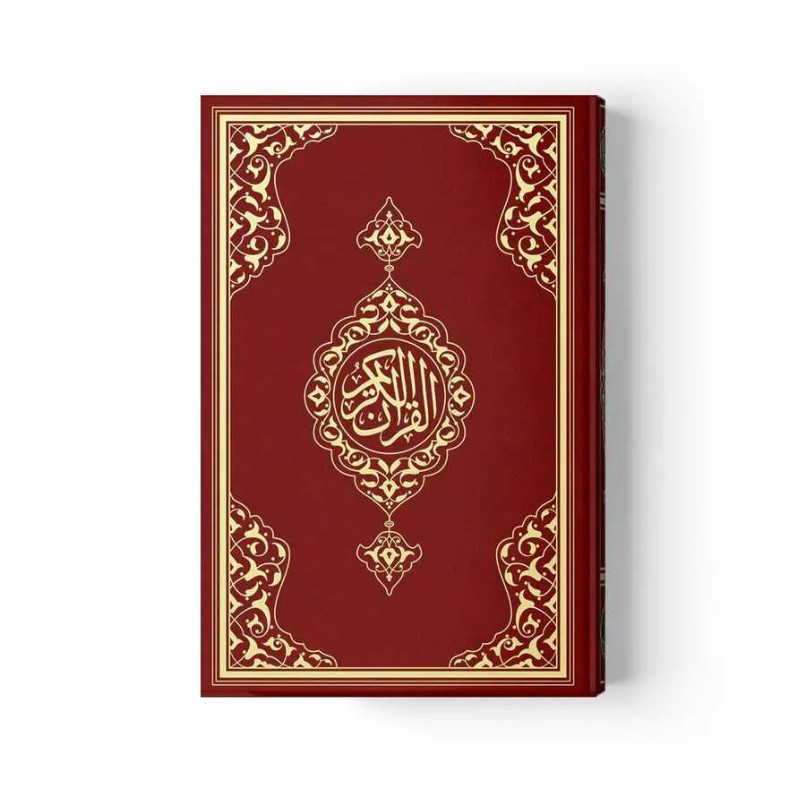
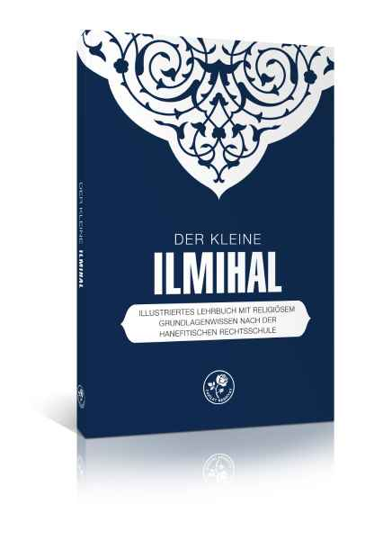
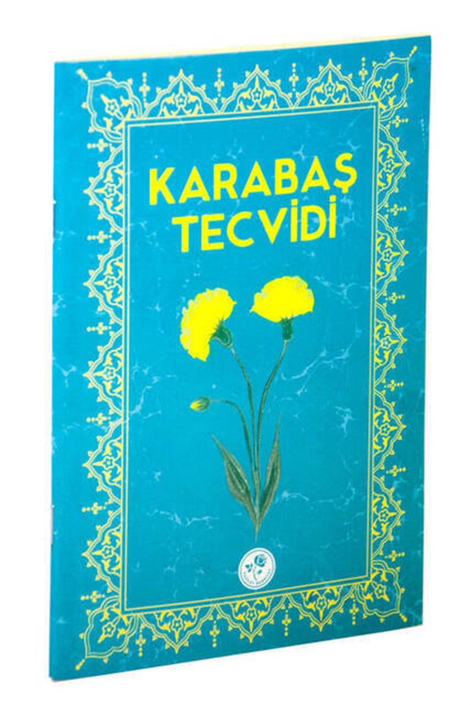

Religiöse Betreuung
Wir ermöglichen das Verrichten der täglichen Pflichtgebete sowie des Freitagsgebets in Gemeinschaft. Zudem bieten wir theologische Beratung für unsere Mitglieder an.
Entdecken Sie unser breites Spektrum an Angeboten zur schulischen Förderung und religiösen Unterweisung für die ganze Familie.
Wir begleiten Kinder und Jugendliche auf ihrem Bildungs- und Lebensweg in Wuppertal.
Unser Verein bietet qualifizierte Unterstützung beim Lernen und der Hausaufgabenbetreuung für alle Schulstufen. Wir fördern gezielt den Ausbau der Sprachkenntnisse und helfen beim Übergang von der Schule in die Berufsausbildung.
Der religiöse Unterricht stützt sich auf etablierte Lehrmethoden. Wir vermitteln ein fundiertes und friedliches Religionsverständnis auf der Grundlage klassischer Werke. Zum Einsatz kommen unter anderem:
Die Kurse richten sich an Jungs und Mädchen im Grundschulalter. Der Unterricht findet am Wochenende sowie in den Schulferien statt.
Wir verwenden bewährte Lehrmittel für eine verlässliche und qualifizierte Ausbildung.

Dieses Werk vermittelt das arabische Alphabet nach einer methodischen Reihenfolge, die auf der phonetischen Verwandtschaft der Buchstaben basiert. Durch diese logische Strukturierung lernen Kinder und Anfänger das Lesen des Korans wesentlich schneller und fehlerfreier als mit herkömmlichen Methoden. Es hat sich über Jahrzehnte hinweg in der Praxis bewährt.

Das Lesen im Originaltext ist zentraler Bestandteil unseres Unterrichts. Dadurch lernen die Kinder die korrekte Aussprache und den Rhythmus der Offenbarungssprache kennen. Dies stärkt das Selbstvertrauen beim selbstständigen Verrichten der täglichen Pflichtgebete und baut eine unmittelbare Beziehung zum heiligen Text auf.

Dieses Handbuch vermittelt die praktischen Grundlagen des islamischen Alltags. Es erklärt die rituellen Waschungen, den genauen Ablauf des Gebets, das Fasten sowie moralische und ethische Werte des Zusammenlebens. Die altersgerechte Aufbereitung gibt den Schülern klare Orientierung für ein gottesfürchtiges und verantwortungsvolles Leben.

Der Tecvid-Unterricht lehrt die feinen Regeln der Koran-Rezitation. Hierzu gehören die korrekten Artikulationspunkte der Laute sowie Dehnungen, Nasalierungen und Pausenregeln. Die Anwendung dieser Regeln ist essenziell, um die ursprüngliche Schönheit und die korrekte Bedeutung der Worte bei der Lesung zu bewahren.
Neben der Kinderförderung deckt unser Verein zahlreiche soziale Bereiche ab.
Wir ermöglichen das Verrichten der täglichen Pflichtgebete sowie des Freitagsgebets in Gemeinschaft. Zudem bieten wir theologische Beratung für unsere Mitglieder an.
Familienberatung, strukturierte Freizeitaktivitäten und regelmäßige Treffen speziell für Frauen stärken das Miteinander und bieten Unterstützung im Lebensalltag.
Durch Moscheeführungen für Schulklassen und Feste in der Nachbarschaft fördern wir den offenen Dialog und stärken das gegenseitige Verständnis in Wuppertal.